NoSql
PHP+MySql的存储缺点
在大部分的PHP的网站开发当中，我们往往采用的数据存储方式是php+mysql，因此就会产生如下图所示的请求方式：
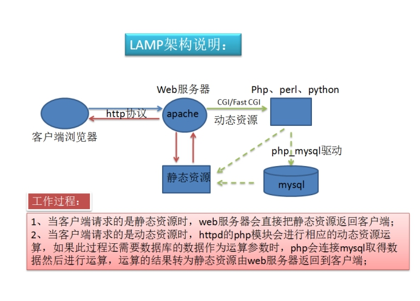
以上的架构对一般对于访问量不大的网站没有任何问题，例如：个人博客网站，小公司的企业网站。然而当网站的数据量和访问量增大之后，即使您的MySql数据库做了非常完美的优化手段，这个架构的请求方式是不会有任何改变的。也就是说，该架构所有的读写操作都是实时发生的，就算你设定了读写分离其实也是把这一切的工作依然是实时的，全部由MySql数据库来承受。所以这种请求方式的架构是有瓶颈的，虽然说理论上你还可以部署更多的数据库读写分离来减轻压力，就算是实时的请求也能扛得过去，但依然存在一个问题，更多的数据库部署意味要添加更多的服务器，这个成本其实是很高的，所以网站优化的另外一个思维就是在当前服务器中减轻数据库的压力，减轻访问(连接)的次数,而并不是不断通过添加服务器来解决。
原理：在我们PHP去和数据库进行交互的时候，减少对数据库的操作、因为数据库需要进行磁盘IO的操作，磁盘IO往往是很慢的（磁盘、硬盘访问的速度本身就很慢）。为了提升速度，一般来说我们会在PHP前往数据库获取数据之前，先去一个缓存系统（一般是一个内存缓存系统，内存的访问速度非常的块，最快的应该是CPU里面的一级缓存、比一级缓存更快的就是CPU寄存器 0 或 1 按位来说）里面获取数据，如果缓存系统里面的数据存在并且没有失效的情况，则可以直接返回。如果不存在或者是存在已经失效，则会去mysql数据库里面进行获取，成功获取后，不但要返回给客户端，还需要在缓存里面缓存一份，下一次请求到达的时候，直接可以从缓存里面获取。对于这种缓存系统叫做旁路式缓存系统。
大型网站的优化方向
1、增加服务器，设置读写分离（架构：更多做数据的备份）
2、增加cpu、高速的IO读写硬盘等硬件和网络带宽
3、在MySql层面做各项优化，如:索引优化，分表等
4、使用反向代理和负载均衡技术
5、聘请可靠的开发技术团队和优秀的运维团队
6、使用NoSql作为缓存中间层
7、CDN进行部署
8、web服务器参数调优
9、……
NoSql的含义
NoSQL ,（Not Only SQL），泛指非关系型数据库, 它是由一次叫“反Sql运动”的社区讨论而诞生的体系。这个运动的发起最早源自于社区网站 LiveJournal的开发团队，它们的初衷是为了用于减少数据库连接数，减轻数据库的工作压力，但发展至今有着其他不同的应用领域，因此NoSQL处于一种所谓百家争鸣的，各执一词的时期。但我们作为NoSql的学习者和应用者，我们不需要关心和纠结这些NoSql的争论，也不需要参与到这些争论当中。
为了更好的理解nosql，则我们需要理解SQL。
- 数据库的概念
- 数据表（行和列构成一个二维结构：表，并且表一般就是现实生活中的一个实体，并且表和表之间是存在关系，也就是实体和实体关系）
- 表中数据一般使用SQL（结构化的查询语句）操作（curd、grant、desc）
只要不是关系型数据库里面的东西，都可以叫做nosql数据库。
关系型数据库：
表的关系：（在描述表关系的时候，我们需要知道我们到底是站在哪一张表的角度去看待关系）
==1：1== 用户表 身份证表，一般会在我们看待表关系的表的上增加一个额外的字段来保存对其唯一的表的主键id。
==1：N== 用户表 相册表，最通用的解决方法，就是增加一个附加表，在附加表里面N里面增加一个字段，表示对1表的主键的id引用。（常见的处理方式有三种：1. 在用户表里面水平方向扩充五个字段，每个表示一张图片 2. 只是在1表里面扩充一个字段，设置的类型为 text，在这个字段里面一般保存所有的图片的信息 [ [url=> ‘1.jpg’,’uid’ => 12 ], [‘url’ => ‘23.jpg’, ‘uid’ => 12….], [] ] 3. 附加表）
==M：N== 网站里面的标签云 ，一般设计一个中间表，中间表里面存在两个字段，第一个字段就是关联M表里面的主键id，第二字段关联N表里面的主键id。（注意：中间不需要设计主键id）
设计主键ID的目的：主要是为了数据的唯一性，带来的其他的作用可以实现快速的查找。主键id也是一种索引结构，既然是索引结构，就适合做数据的查找。
关联: 三范式(记住：在设计表的时候，并不是只有三范，还是5范式….只能借助一些软件)
==范式1==：原子性，字段不可拆分，就是字段是最小字段，不要纠结，因为mysql天生支持1范。
==范式2==：为了保证数据唯一性，引入主键id（主键索引），unique key（唯一索引）【1. 主键只能存在一个，可以让多个字段形成一个复合主键，唯一索引可以存在多个 2. 主键，不允许出现重复，不允许出现null 3. 唯一，不能出现重复，但是可以允许出现null，但是null不能重复】
==范式3==：不能存在冗余，而引入关联。（拆成最小表：只保存用户的最最基本信息 id uname）
| id | uname | address_id |
|---|---|---|
| 1 | andy | 1 |
| 2 | mark | 2 |
| 3 | liyang | 1 |
| id | address_name |
|---|---|
| 1 | 广州市天河区珠吉新路58号 |
| 2 | 深圳市罗湖区翠竹路78号 |
| 3 | xxx路 |
下去：反3范（反的是第三个）表里面要存在冗余信息。
需求：网页要显示出当前这个已经有多少张照片了？
| id | uname | imgs_count |
|---|---|---|
| 1 | andy | 2 |
| 2 | mark0 | 0 |
| 3 | liyang | 1 |
select count(*) from xiangce where uid = 1;
| id | img_url | uid | add_time |
|---|---|---|---|
| 1 | imgs/12312.jpg | 1 | 123213123 |
| 2 | imgs/12321321.jpg | 1 | 12312312 |
| 3 | imgs/12312122312.jpg | 3 | 12312312 |
https://www.cnblogs.com/xwdreamer/archive/2012/05/17/2506039.html
NoSql的共同特点和优势
NoSQL 通常是以key-value形式存储的（如:Memcache、Redis、Mongodb）
不支持SQL语句
没有表结构
配置简单
灵活、高效的操作与数据模型（key-value存储，一般叫做hash表）
低廉的学习成本
能很好地作为MySql的中间层
能很好地支持PHP
NoSql的共同的缺点
没有统一的标准
安全性极差（memcache没有权限系统 内网）
没有正式的官方支持
各种产品还不算成熟
权威支持的产品价格很高
NoSql的产品分类
网站：http://www.nosql-database.org/
redis
mongodb
memcache
Aliyun MQ
HBASE
…..
问题：为什么搜索不到memcache？
答：一般的人认为memcache是一个缓存系统，算不上一个数据库。
问题：memcacheDB是什么？
答：memcache出现的历史是非常的早，在出现之后，只是作为一个缓存系统出现，不支持持久化的操作（断电丢失数据）。国内的新浪最先使用的memcache，新浪业务需要做一些持久化的操作，则他们对memcache高可用（数据持久化），这个新的产品 memcacheDB，对于现在来说，实际意义不大，如果真的需要缓存系统做持久化建议使用Redis。
Memcache技术
memcache简介
memcache是一个内存缓存系统。意思是memcache里面的数据全部是保存在内存里面的，速度上比硬盘快了很多很多。
常见存储介质速度：
硬盘最慢、内存其次、一级缓存快、二级缓存更快、cpu（寄存器，电脑里面最快最小的存储单元，只能存储简单的0和1状态）。
为什么要使用memcache做数据的缓存？
答：主要的原因是这样的，由于目前是出于web2.0的时代，这个数据量现在已经非常大，原先的系统架构已经不再能够支持现在的访问。所以才引入这些缓存系统来响应更大的并发。
Memcache的优点
1、纯内存的缓存机制，因此它是所有NoSql产品当中最简单也是速度最快,但是同时也是功能最弱的
2、内置分布式(集群)算法，使得开发者不需要自己去实现
3、它能把单项数据缓存的过期时间设置为30天，也能使得单项数据常驻内存当中
4、完美支持PHP的调用
Memcache的缺点
1、由于memcache使用telnet协议进行传输，没有数据加密的功能，安全性很差，通常只适用于内网。
2、Memcache最大的内存存储空间（吞吐量）只有64M，如果64M的内存一旦爆满，Memcache会指定重启，并释放当前所有的内存，在内存数据就是无情的丢失也不会保留。（-m选项指定内存的大小）
3、memcache单个的value值最大为1M(string)
4、由于Memcache把数据置于内存中，所以服务器进行维护或者重启，那么数据就会丢（本身就是缓存，是允许数据进行丢失，丢失了之后重新缓存一份即可。和存储不一样，真正保证数据不能丢失）
5、数据零散，无法遍历，管理数据完整性非常一般
memcache和mysql对比
什么是nosql数据库？
答：1. nosql数据库不使用sql语句作为查询 ；2. 没有严格的表结构的概念，一般来说都是使用key-value的hash表把数据保存在内存里面
| key | value |
|---|---|
| name | caoyang |
| age | 12 |
| address | shanghaishi |
注意：
hash表（hash函数）有一个好处：时间复杂度为O(1)：理论上来当使用hash表保存数据的时候，不会随着数据量的增加使得查询的速度变慢，响应的时间基本不变。
即：理论上10w条记录里面检索1条满足记录的时间和 从 1000w里面检测1条时间基本差不多。
hash的弊端：数据是随机分在某一个内存的区域里面。
最大的弊端就是hash碰撞：理论上来说多个key对应同一个值，是绝对存在的，但是发生的概念很低，可以使用更多的优秀的hash函数（md5 sha1 sha256 crc32…）来尽可能的避免。
hash使用的场景：下载软件的时候需要使用 hash做检验。（hash严格意义上不是加密）
例如我们常见的md5(是一个hash函数)：可以把任何大小的文件转换为一个固定长度的字符串（ 32位的16进制字符 ，128为二进制的字符）
1Byte = 8bits
1 0x = 4bits
2 0x = 8bits
2 0x = 1Byte
32 0x = 16Byte
PHP业务很少做位的操作？
答：签到业务
memcache是一个c/s架构软件
memcache是一个c/s架构的软件，需要安装server端来提供相应的服务；然后使用相应的客户端，命令行telnet、php语言去操作服务器端。
PHP + Memcache + MySql的架构图
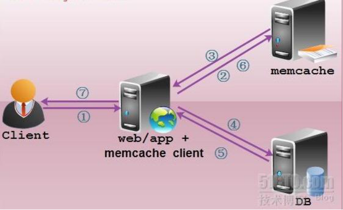
当前方式是客户端（用户浏览器）发起请求，这时这种架构的请求方式，我们称为非实时请求，那么每一次的请求必须通过中间的缓存层面进行，如果缓存中有数据，那么数据库就不会做出任何的响应，如果没有缓存的数据，数据库只会响应一次，并把响应的结果放到内存中等待用户下一次的请求。
window下memcache安装
注意：这个一般在本地开发的时候使用，但是线上环境一般都是在linux下运行的。
一次性使用
- 复制memcahe软件包里面的exe文件到一个非中文的目录下
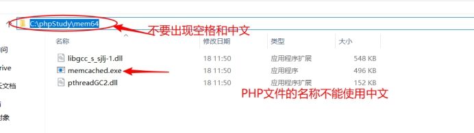
需要使用管理员的身份启动cmd窗口
如果是window7则使用如下方式打开cmd窗口
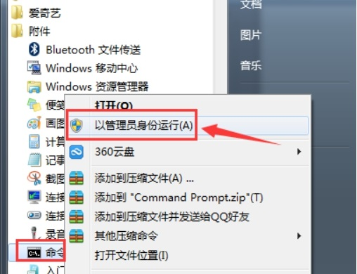
如果windows10则推荐使用power shell（使用快捷方式 windows键 + x键）
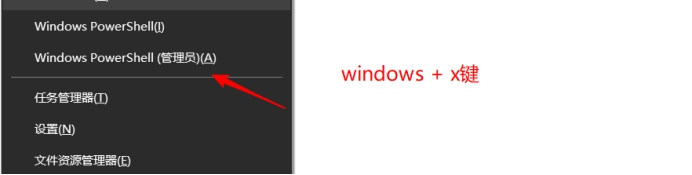
- 进入对应软件的目录，查看帮助
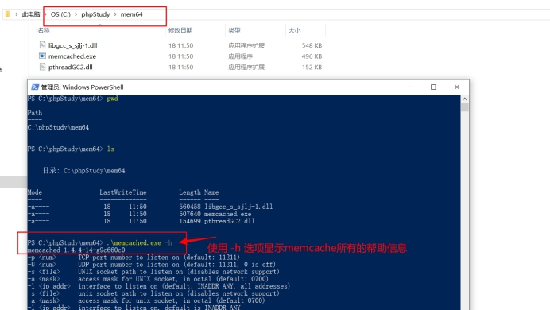
参数解释：
-p参数 表示监听的端口， 默认是 11211端口
-m参数 表示分配给memcache的内存大小
-d 参数 表示可以把memcache加入到window系统服务，然后可以使用命令启动或者是重启
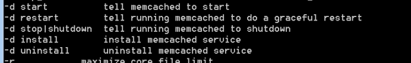
-vvv参数 打印启动的信息
-f增长因子
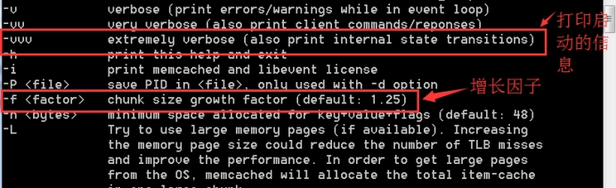
- 一次性启动：默认是占据这个终端窗口的
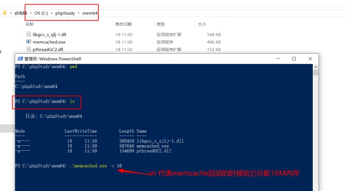
如果需要终止服务，只需要按一下ctrl+c
安装成window系统服务
- 在启动memcache.exe的时候加上
-d install即可安装为服务
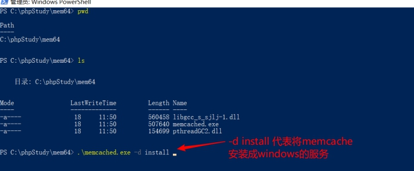
- 当成为一个系统服务后可以在服务列表里面进行服务的管理
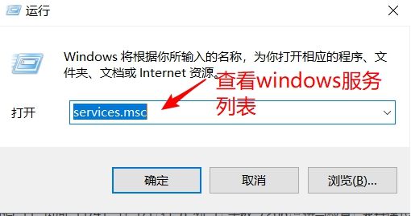
查看具体的服务信息
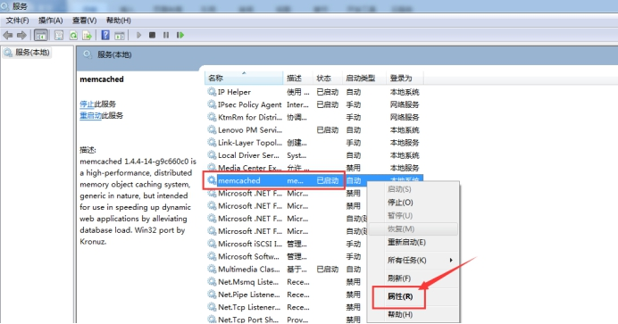
- 点击【属性】后
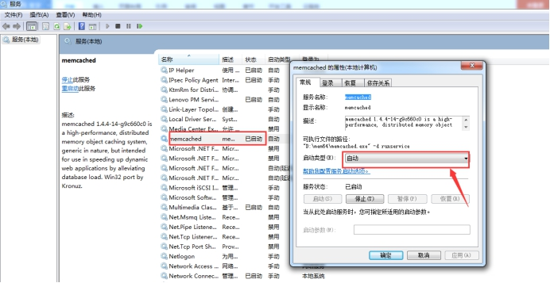
4 . 如果要卸载window下的memcache服务，则可以使用 -d uninstall命令
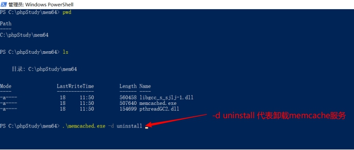
Memcache客户端管理（使用Telnet、PHP）
- memcache可以使用Telnet这个命令来管理服务器端。（注意：前提是memcache已经启动）
> telnet localhost 11211 {表示的含义是去请求本机的11211的服务}
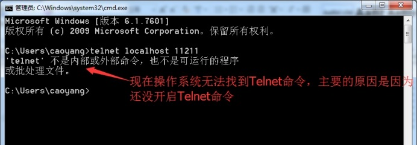
解决：在程序里面安装Telnet命令即可，操作如下：先打开控制面板
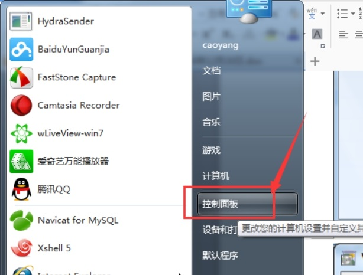
点击【程序】
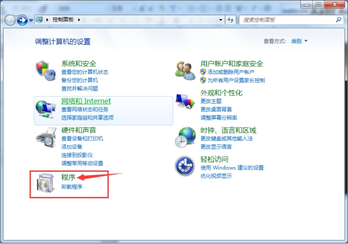
【打开或关闭windows功能】
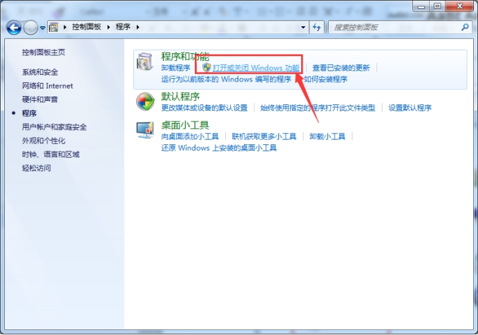
【Telnet客户端】
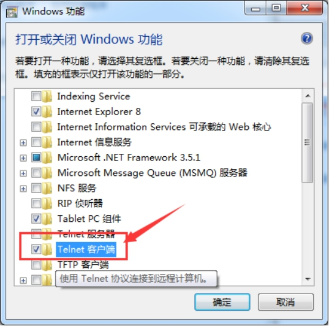
- 连接远程memcache服务器
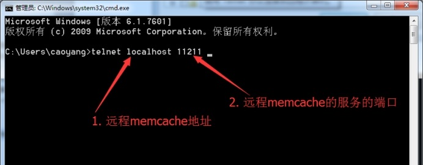
输入上面的命令后回车，然后按一下ctrl+]之后，在回车
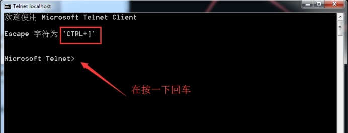
- 输入如下命令测试：
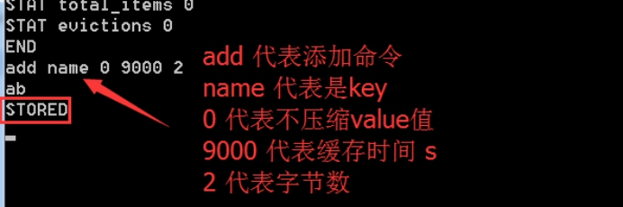
- 退出终端：输入
quit即可
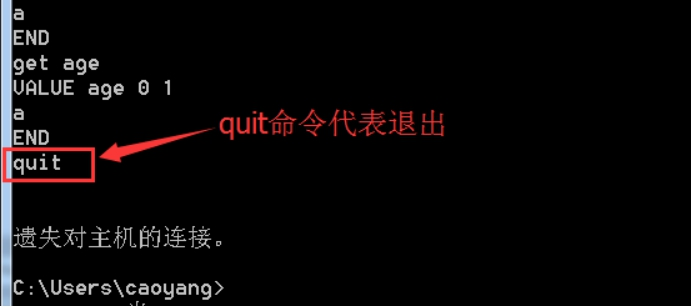
xshell提供的强大的功能
由于windows自带的telnet提供的功能不能进行字符的删除，则我们可以使用xshell提供的telnet功能。
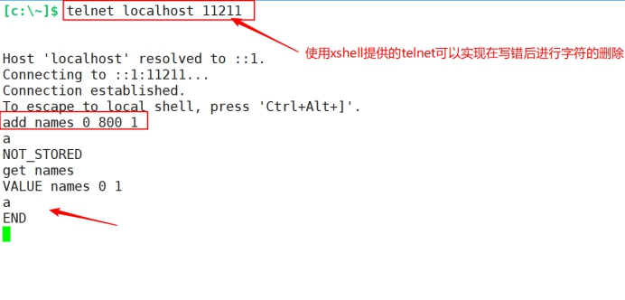
==Memcache下的常见命令==（重要）
注意：memcache需要使用客户端进行链接的，前提是memcache服务必须启动。
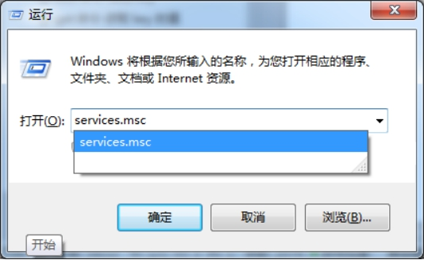
确保服务是正常启动的。
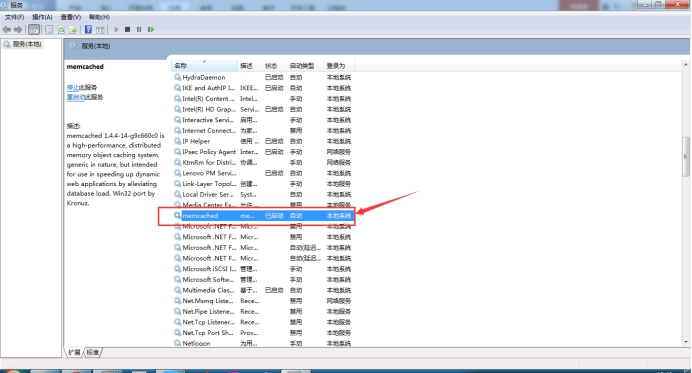
使用客户端telnet链接
> telnet memcache的主机的IP地址 端口
测试是否连接成功（stats查看memcache的状态）
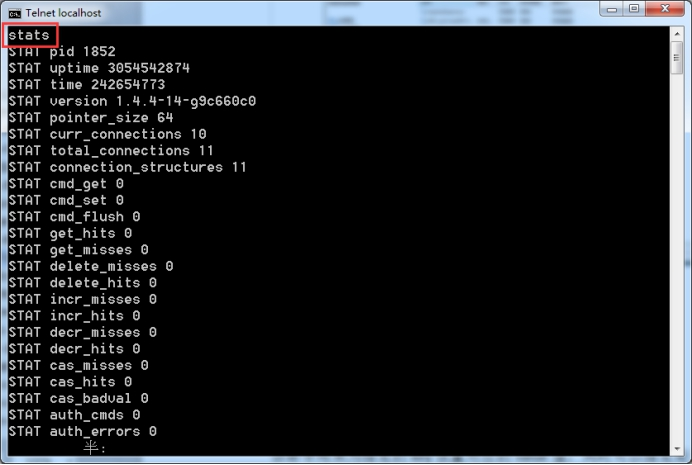
add命令-添加key
该命令用来添加key，同时指定是否进行压缩以及缓存时间。
语法：
> add KEY FLAGE EXPIRES Bytes
KEY : 表示需要存储的key
FLAGE：表示是否对存储的数据进行压缩，0表示不压缩， 1表示压缩；但是不建议压缩（压缩需要操作系统消耗一定的资源），拿空间换时间。
EXPIRES: 表示value值失效的时间，单位是s。如果设置为0，表示不过期，但是memcache里面存在一个最大的保留时间为30天。
还得注意一件事，当memcache本身的存储不够用的情况下，会优先剔除这些长期没有使用的的数据信息，以腾出新的空间供其他的数据缓存。（LRU算法：最近最少使用原则，最近一段时间内，最少被使用的数据，在剔除的时候会被优先剔除）
Bytes：表示存储value值的字节数（在命令行是需要手工指定，并且在存储的时候，需要严格的对应，但是如果使用的PHP作为客户端操作，就不用担心这个）
使用如下：
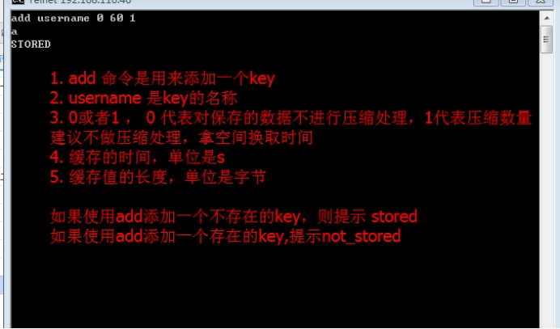
get命令-获取key的值
该命令主要用来获取指定key的value值
> get KEY
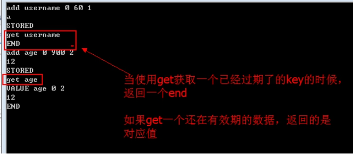
set命令-给key设置值
使用set命令的时候，如果key不存在，则创建一个key，如果存在这个key，则做替换操作。
为什么会出现set?
这是因为我们使用add做添加的时候，如果某个key在缓存系统里面存在，使用add的时候，会报错的。则就出现一个set，如果不存在，则添加，如果存在则替换
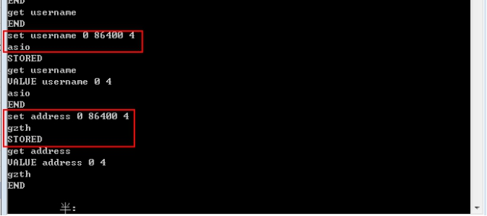
delete命令-删除对应的key
该命令删除指定key的值
删除一个不存在的key
stats命令-查看memcache服务的状态
（status）
该命令用来查看memcache服务器的状态
使用如下：
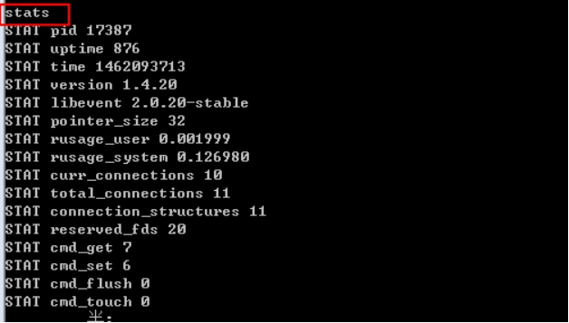
常见参数解释
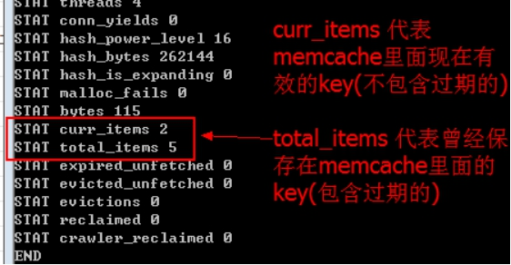
flush_all命令-清空memcache里面所有的数据，==实际生产环境慎用==(会产生，雪崩效应)
incr 自增命令
一般在统计文章的浏览量
需要注意：incr默认只能做+1的自增，类似$i++
使用如下：
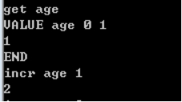
decr 自减命令
需要注意：decr默认只能做-1的自减，类似$i–
使用如下：
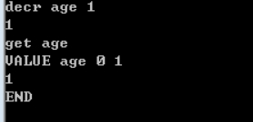
==PHP操作memcache==（重要）
简介
一般来说，Telnet只是用来调试memcache的基本命令的使用，但是在实际开发过程中，一般我们是通过PHP的扩展去操作memcache的，则这个时候我们需要开启PHP操作memcache的扩展。
扩展下载地址：http://pecl.php.net/
memcache类和memcached类的区别
如果我们打开http://www.php.net/manual/zh/搜索`memcache`关键字会出现以下情况的信息，如图所示:
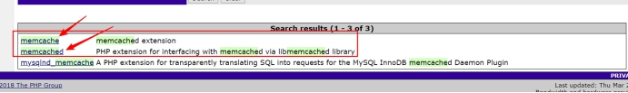
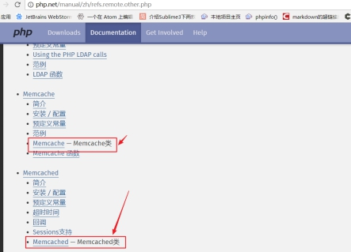
在PHP手册里面提供了memcache和memcached两个扩展类来操作memcache服务器。本质上来说memcache和memcached是的功能是一样的。
memcache类支持php5.3 - php5.6的单服务器和多服务器的操作。但多服务器的操作在Linux操作系统中兼容性会出现bug。
为了在Linux中很好地兼容多服务器的操作，php官方推出了一个叫memcached的类，该类只能运行在Linux操作系统当中，支持Linux的单服务器和多服务器操作。如果你使用Linux操作系统作为服务器必须使用Memcached类。同时Memcached类是基于一个叫libmemcached的库，这个库是用C语言开发的在Linux当中运行的效率最高。
- windows 下使用memcache这个类，memcached这个类是无法在windows下使用。
- linux下可以使用 memcache这个类，也可以使用memcached这个类，但是建议使用 memcached 这个类
Windows下安装memcache扩展
由于我们现在使用的是windows下的memcache，则我们需要使用memcache扩展类。
下载PHP操作memcache的扩展类
- 利用phpinfo查看PHP环境信息，选择合适的dll扩展文件，主要是查看PHP版本，平台架构，是否线程安全，以及vs版本
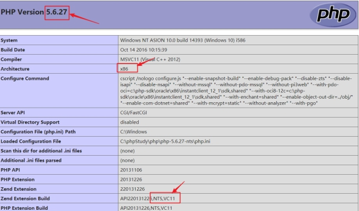
- 将上面的扩展文件复制到php的ext目录
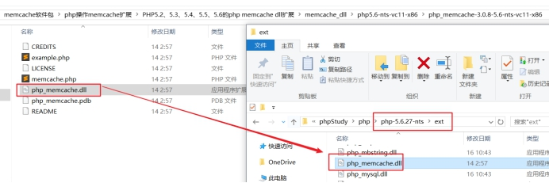
- 修改php.ini文件，增加
extension=php_memcache.dll信息
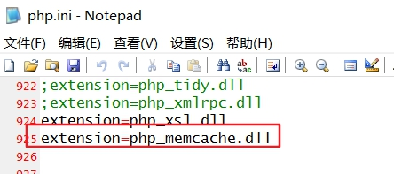
- 使用
phpinfo()测试，如果出现如下信息，表示安装成功
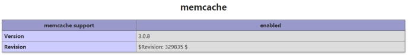
Memcache存储PHP各种数据类型
在我们使用memcache的时候进行数据缓存的时候，一般会缓存的PHP数据类型如下：
- 基本数据类型：字符串、整数、布尔值….
- 复合数据类型：数组（序列化的json格式的字符串）、一般对象很少存储
但是需要注意的是，在memcache的底层其value值都是string类型的，至于我们缓存的PHP里面的数组，在memcache内部会进行序列化后保存起来。
操作步骤
使用PHP扩展（memcache后），则可以使用memcache的类
1
$memcache = new Memcache();
使用这个memecache对象去链接memcache服务器
1
$memcache->connect('127.0.0.1', 11211);
使用相关的方法来操作数据
1
$memcache->set( key, value, isZip, expires ) ; // 建议set
使用相关的方法来关闭连接
1
$memcache->close();
php中的基本数据类型缓存
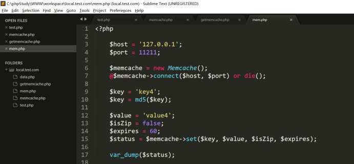
php中的复合数据类型缓存
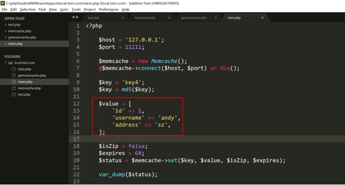
注意： 在我们存储复合数据类型的时候，memcache的底层会给我们做序列化操作。这个行为对程序员来说是完全透明的。
==Memcache实现session共享==（重要）
简介
session是用来跨脚本共享数据的，保存在服务器端，并且需要依赖cookie，保存一个session_id，所以一般说session是基于cookie。
session的存储介质可以是：文件、mysql(需要重写session相关的函数)、memcache。实际项目中使用文件还是偏多，但是如果项目达到一定的并发数之后基本都是使用memcache来保存。
参考阅读
https://blog.csdn.net/xinxinji/article/details/50523629
一般一个网站变大之后，为了提升网站的能力，一般都会做负载均衡。如果使用了负载均衡的则会出现session丢失的问题。
可以使用memcache来保存session数据，使得所有的session全部保存在memcache服务器里面。其他的web服务器也是去同一个memcache服务器里面获取数据。被称为session共享。
一般对于负载均衡集群还可以使用linux下的NFS文件共享服务来解决session文件丢失的问题。
配置session共享
配置web服务器实现session共享
a. 修改php.ini文件的三处，表示现在使用memcache来保存session数据
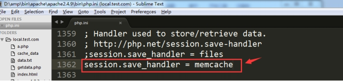
b. 把session数据保存在哪台memcache上面
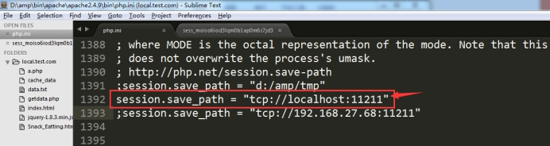
c. 开启php操作memcache的扩展，先把对应的dll文件复制到php的ext目录
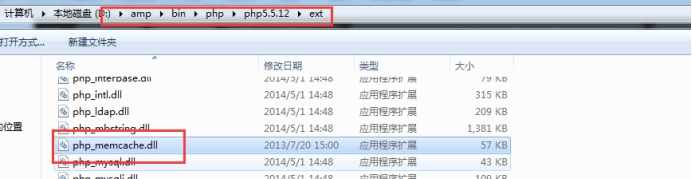
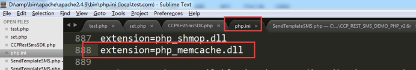
注意：通过phpinfo()里面的信息，选择对应的php_memcache.dll 版本。
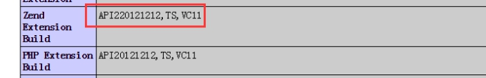
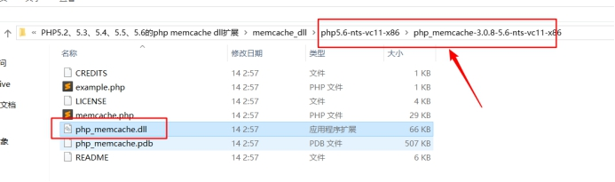
重启Apache，使用phpinfo函数进行测试，见到如下信息则成功。
现在可使用memcache保存session数据
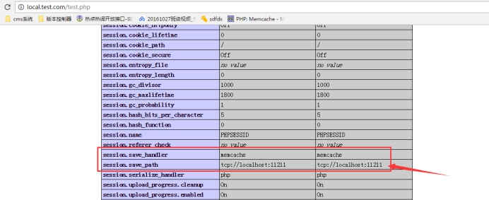
memcache扩展成功开启
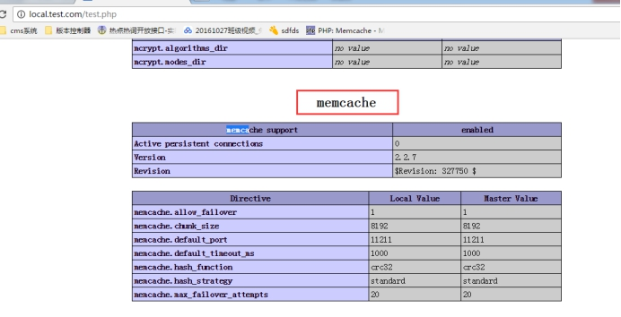
测试使用
需要注意：使用memcache保存session后，memcache服务器必须启动
设置session数据
获取session里面的数据
注意： 当用户的session数据保存在memcache里面之后，是拿什么作为session数据存储的key呢？
答：使用服务器给客户端分配的session_id做的key。
memcache分布式缓存系统
上面讲解的memcache都是==单台==memcache的使用。
概图：
什么是memcache分布式缓存系统？
答：由于单台memcache的能力有限，例如内存空间大小有限，有的时候为了存储更多的数据，就是多台memcache来存储数据。而多台memcache组成的架构就被称为分布式缓存系统（集群缓存系统）。
测试：只需要在程序里面，配置一下多台memcache的ip地址和端口，memcache内部会存在一个算法，把key存储在对应的memcache服务器上。
代码：
- 使用分布式存储数据（内部使用分布的策略的就是使用的取模，内置策略）
- 获取分布式数据
总结：在使用上只需要配置一下memcache分布式的ip和端口，然后把数据丢给memcache即可，我们不用关心数据是存在哪台memcache服务器上。当我们获取数据的时候，也需要配置一下memcache分布式的IP和端口，告诉它一个key，memcache会自己去找对应存储数据的memcache服务器把值获取出来。
memcache内存分配机制
由于memcache是一个内存缓存系统，本身需要内存来保存数据，这就牵涉到内存的申请释放的问题。在memcache设计之初是不断申请和释放。但是这样设计导致一个问题：叫做内存碎片化。（备注：电脑的磁盘也存在碎片化的概念），同时还会使得管理上非常的麻烦，需要不断的找操作系统申请内存，释放内存，这无疑是一个很大的开销。
了解：什么是内存碎片化？
内存碎片化永远存在，但是可以使用优秀的算法尽可能的减少内存碎片化。内存的频繁的申请和释放也是需要消耗资源。
所以memcache为了解决上面的问题，使用了一种较为优秀的处理方法。叫做内存的预先分配机制。
启动memcache的时候使用
-m指定分配的内存大小
- 预先分配机制
注意一下几点：
a. chunk 小块memcache存储数据最小的单元
b. 1M里面所有的小的chunk组成一个slab class
c. 相邻的chunk之间的比值是固定的，被称为增长因子-f，根据实际的业务数据大小做处理
d. memcache里面最大的value可以是1M
备注：最小的chunk是需要源码编译才可以修改
问题：如果真的有value值大小是超过1M，则这个时候不是memcache，使用Redis即可，Redis最大单个value值可以存储1G。
总结：
a. 内存预先分配机制（内存碎片化和内存管理）
b. LRU算法（为了更好的使用空间，需要注意chunk在不够用的情况下，才会这样） c. 惰性删除机制（memcache本身不监控数据是否过期，当下一次重新获取数据的时候，才会去查看数据是否有效，如果有效则返回，否则清除。）
LRU算法：被称为最近最少使用原则的算法，当memcache的一个slab里面的chunk不够使用的情况下（存储满了，数据在有效期）当有新的满足chunk的数据过来的情况下，memcache会优先把slab里面最近一段时间内，最不活跃的数据先剔除掉，腾出空间，给新的数据使用。
==linux下源码编译安装memcache==
如何给PHP装扩展？不仅限于讲的memcache，后面还有其他的Redis、mongodb…..
简介
一般来说，实际生成环境memcache服务都是安装在linux服务下的，同时在linux下的PHP如果要操作memcache服务器，一般来说，我们都是使用的memcached这个扩展类。
源码准备
libevent-2.0.20-stable.tar.gz
memcached-1.4.15.tar.gz
或
libmemcached-1.0.14.tar.gz
memcached-2.1.0.tgz
由于memcache的底层需要一个libevent库，所以必须先安装该库后，再源码编译安装memcache（存在严格的顺序的问题），并且需要在安装的时候指定该库的位置。
libevent下载地址：http://libevent.org/
同时，在linux下一般来说，我们都是为PHP安装memcached这个扩展类来操作memcache的，但是由于该扩展库底层需要依赖libmemcached库，所以我们需要先安装这库，再安装memcached这个扩展类。
memcache安装
- 上传源码到
/usr/local/src目录下，对libevent，解压，并安装

1 | cd /usr/local/src |
3， 编译安装memcached
1 | tar -zxvf memcached-1.4.20.tar.gz |
linux下安装php的扩展memcache
- 上传源码到
/usr/local/src目录，编译安装libmemcached库
1 | cd /usr/local/src |
注意，如果安装过程中，出现如下的错误，则按照如下的方式进行解决
解决：
1 | yum install -y gcc44 gcc44-c++ libstdc++44-devel |
- 编译安装PHP操作memcache的扩展
1 | cd /usr/local/src |
- 成功安装后，则会提示出一个文件夹，该文件夹下会存在一个memcached.so文件，这个时候修改php.ini的配置文件，增加一行
1 | vim /usr/local/php/lib/php.ini |
- 使用
phpinfo()函数进行测试，如果在出现如下界面，表示扩展安装成功
Memcache设置缓存时间的问题
文档：http://php.net/manual/zh/memcached.expiration.php
如何在memcache里面为指定的key设置缓存有效期呢？
> set('name', 'asion', isZIp，缓存时间)
- 缓存时间：使用s秒数，但是不能超过 86400*30 s，也就是30天的秒数。
- 设置时间戳，但是该方式只在linux下可以使用，在window下并不能生效。
如何在memcache里面设置一个超过30天缓存时间的数据，例如设置为31天？
答：使用时间戳，time() + 86400 * 31；需要注意如果我们不给memcache的value设置有效期，则memcache默认只能保持30天有效期；但是如果我们需要手工的设置一个数据的有效期超过30天，则只能使用时间戳的方式设置。同时需要注意，该方法在Windows下并不支持，需要在linux下才可以。
memcache高可用
（==本身就是缓存系统==）
memcache是否支持高可用？
答：支持。
但是不建议memcache做高可用。memcache本身的数据是保持在内存里面，如果断电或者宕机、服务器挂了则数据会丢失，由于memcache本身就是做缓存的，数据是允许丢失的，下一次重新生成一份缓存即可。
这里高可用的意思就是memcache里面的数据是否可以在宕机或者突然终止的情况下，数据还要存在。
备注
- 机房一般来说断电是没有影响的，就是即使机房断电，是完全不影响服务器的使用。
- 机房没那么容易断电。
- 但是最好不要做数据丢失。丢失多，一瞬间mysql的压力会暴增。mysql扛不起的情况下出现宕机。
- 由于缓存系统出现问题，导致mysql的压力变大，出现宕机，这种情况被称为memcache的==雪崩现象==，
- 出现宕机后，一般mysql都有重启的机制，重启后缓存系统会重建，重建部分之后，mysql还是有可能宕机，重启，缓存在重建一部分…..随着时间推移，缓存系统重新的建立，趋于稳定…..。
有以下两种方案实现：
- 典故：主要是sina公司发现memcache本身不支持高可用，单独为其开发了一个高可用的插件（MemcacheDB）定期的把memcache内存里面的数据同步的写到磁盘上面。
备注：该产品产生的原因是因为当时没有可以把内存里面的数据同步写入到磁盘的产品。则新浪自主开发了该产品。但是后面出现redis可以把内存里面的数据写入到磁盘，所以该产品基本不使用了。后面使用redis做数据缓存和持久化存储。
- repcached产品也可以实现。
http://www.07net01.com/program/524088.html
memcache阅读资料
http://kimi.it/category/memcache/
memcache实际使用
- 缓存网站里面的局部数据
- 访问频率限制功能 如，[点赞 1天之内点赞1次]
例如：同一个手机号码一分钟之内只能发送1次短信验证（有效期60s）；一天只能只能拥有3次发送短信的机会(有效期)[时间点： 1. 到今天23:59:59末点时间戳 、 2. 设置 今日末点23:59:59 - 当前时间 = s数 ]。
- 文章浏览数统计
对于文章浏览数没必要实时的写入数据库，我们可以将文章的浏览器数先写入到memcache缓存中，然后在夜晚通过定时任务将对应的浏览器写入到数据库中，做持久化操作。
- 热门软件下载排行榜
一般这些数据也不是实时的，一般来说都是统计前一天的下载量，所以我们可以将对应软件下载排行数据缓存一天，到下一天后进行重新缓存。
memadmin图形化界面
网站：http://www.junopen.com/memadmin/
MemAdmin是一款可视化的Memcached管理与监控工具，使用PHP开发，体积小，操作简单。
主要功能：
· 服务器参数监控：STATS、SETTINGS、ITEMS、SLABS、SIZES实时刷新
· 服务器性能监控：GET、DELETE、INCR、DECR、CAS等常用操作命中率实时监控
· 支持数据遍历，方便对存储内容进行监视
· 支持条件查询，筛选出满足条件的KEY或VALUE
· 数组、JSON等序列化字符反序列显示
· 兼容memcache协议的其他服务，如Tokyo Tyrant (遍历功能除外)
· 支持服务器连接池，多服务器管理切换方便简洁
http状态码-502
PHP的应用服务器挂了，也就是php-fpm不可以使用了。